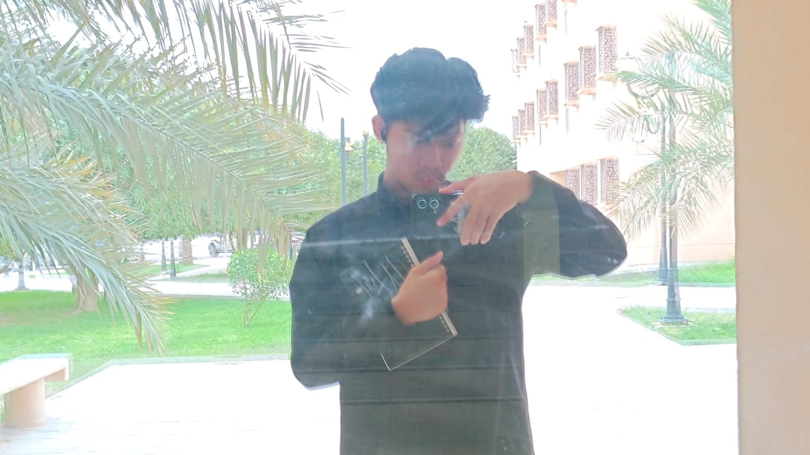

BIODATA DIRI
Informatics Student
| Nama Lengkap | Abdul Fattah Ismail |
| NIM | 241057021 |
| Kelahiran | Klaten, 16 Januari 2005 |
| Domisili | Klaten, Jawa Tengah |
| Status | Mahasiswa Semester 4 |

| Nama Lengkap | Abdul Fattah Ismail |
| NIM | 241057021 |
| Kelahiran | Klaten, 16 Januari 2005 |
| Domisili | Klaten, Jawa Tengah |
| Status | Mahasiswa Semester 4 |